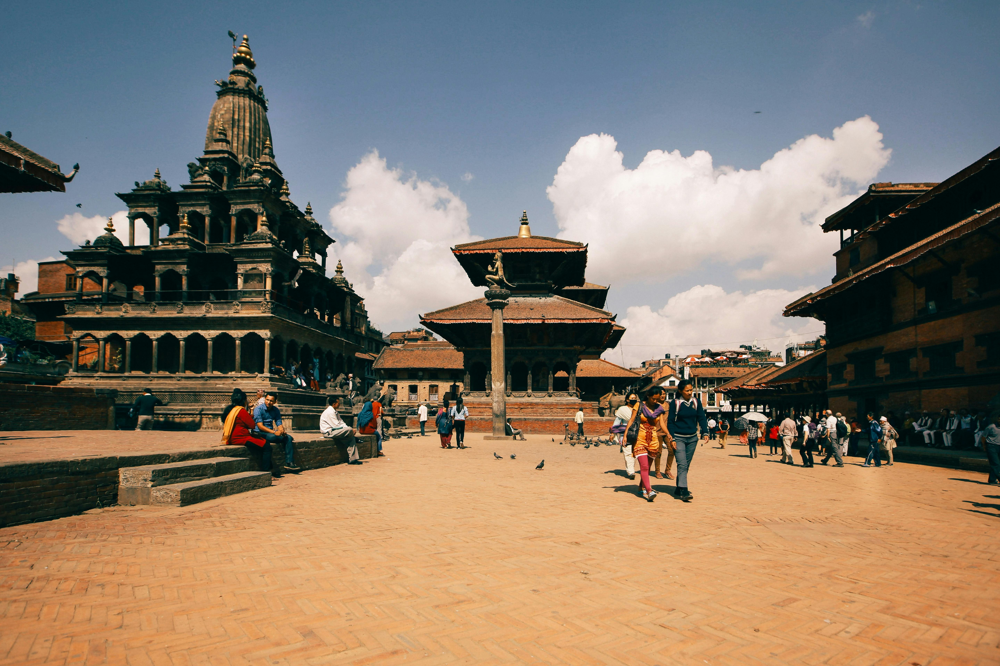
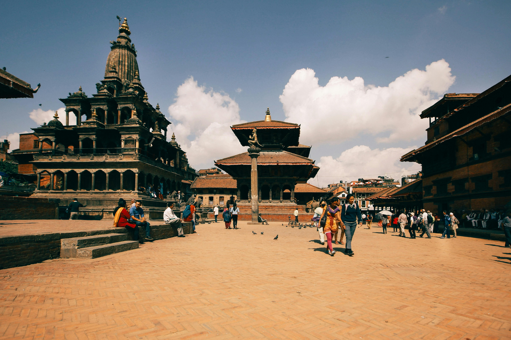

Basantapur
Basantapur is a charming area located in the Himalayan Terathum District of Koshi Province, Nepal. Often referred to as the "Gateway to the capital city of rhododendrons," Basantapur is known for its stunning natural beauty, vibrant rhododendron forests, and snow-covered peaks, especially during the winter season.
Basantapur is not only a place of historical significance but also a hub for trekking enthusiasts. The region is known for its trekking trails, including the famous Kanchenjunga trek, which takes adventurers through some of the most breathtaking landscapes in Nepal.
Tourism
Basantapur attracts tourists with its natural beauty, scenic landscapes, and trekking opportunities. The vibrant rhododendron forests, snow-capped peaks, and tranquil atmosphere make it a haven for nature lovers and trekkers alike.
Things to Know
- Entry Fee:
- Foreigners: NPR 1,000
- Nepalese: Free
Gallery
 

Things to Do
- Explore Kathmandu Durbar Square.
- Embark on trekking adventures like the Kanchenjunga trek.
- Visit local temples and experience traditional Nepalese culture.
- Enjoy scenic views of the surrounding mountains and rhododendron forests.